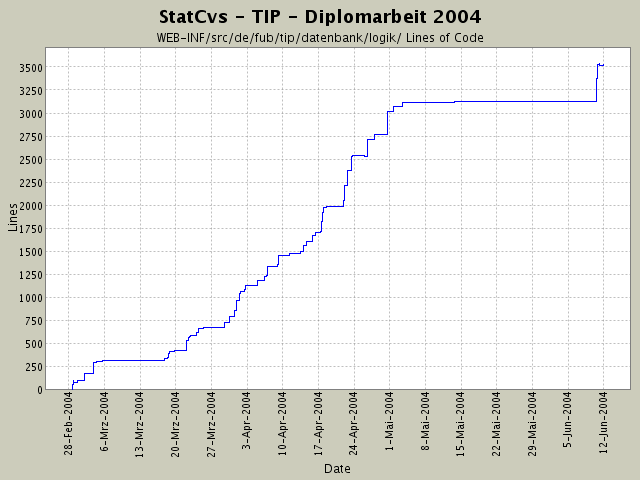

Summary Period: 2004-02-28 to 2004-06-11
[root]/WEB-INF/src/de/fub/tip/datenbank/logik

Total Lines Of Code:
3523 (2004-06-13 13:05)
| Author | Changes | Lines of Code | Lines per Change |
|---|---|---|---|
| hirsch | 199 (100.0%) | 5461 (100.0%) | 27.4 |
immer noch auf der Suche nach der NullPointerException
2 lines of code changed in:
loggingausgaben zur fehlersuche hinzugefügt - immer noch NullPointerException bei irgendeinem
SightVO-Objekt
4 lines of code changed in:
Falscher Verweis auf SightVO war Ursache für NullPointerException
5 lines of code changed in:
SQL so angepasst, das doppelt vorkommende Sachen (wie name) jeweils als s.name AS sname und t.name as tname selektiert werden.
Dann wird rs.getString("sname/tname") gemacht!
3 lines of code changed in:
Anpassungen - t.name wird nicht ausgelesen
3 lines of code changed in:
Anzeige verfeinert - zum Debugging mal alles anzeigenlassen ...
3 lines of code changed in:
Anzeige der Sehenswürdigkeit verfeinert -
NullPointerException kam beim Logging ....
2 lines of code changed in:
Endstand: SQL-Statements generieren noch unterschiedliche Ergebnisse -
aber erst mal pennen ... Anzeige an sich geht!
TODO: Internationalisierung anpassen!
13 lines of code changed in:
Sehenswürdigkeit wurde nicht richtig eingeschränkt im SQL-Statement -
jetzt sollte es gehen! Zum Glück gibt's die DB-Kosole :-)
4 lines of code changed in:
Logging des SQL-Statements - es wird immer noch zu viel angezueigt
12 lines of code changed in:
SELECT Statement ist fehlerhaft - es werden alle infos angezeigt!
4 lines of code changed in:
Bei Datenbankabfragen dürfen zum Auslesen der Parameter nicht
die Tabellenaliase aus dem SQL-Statement benutzt werden!
Das bringt immer ein "xyz - spaltenname nicht vorhanden"
13 lines of code changed in:
Fehler: t.description geht nicht - wahrscheinlich haben Katjas Daten wieder eine Macke .... hab aber keine Lust diesen Fehler in den Beispieldaten zu suchen!
3 lines of code changed in:
Debuugingausgabe für informationen -
vll. werden sie auch nicht richtig gespeichert, da die Anzeige immer leer ist
3 lines of code changed in:
weitere Anpassungen der Logik der Informationsanzeige - erster Test
138 lines of code changed in:
Anpassung der Ansicht auf die EventArea-Sachen:
* 1) Liste von Sehenswürdigkeitsgruppen
* 2) Tabelle der genauen Sehenswürdigkeiten mit Name und Bild und
more Details-Link
22 lines of code changed in:
Fehler war, dass in der Action der Container falsch gespeichert wurde!
2 lines of code changed in:
Umlaut in strutsconfig hat Absturz verursacht - MIST!
Ansonsten Fehlerchen in Javadoc angepasst (void Methoden hatten @return-Tag)
2 lines of code changed in:
SELECT angepasst und Debuggingausgabe hinzugefügt
22 lines of code changed in:
Informationsanzeige: Klassenrümpfe erstellt und in Config eingebunden.
EclipseProbleme (100 %CPU) bleiben wieder.
36 lines of code changed in:
(131 more)
Generated by StatCvs v0.2-dev